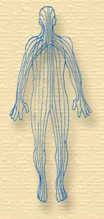

D’après Rwo Shur, une forme de réflexologie a pris naissance il y a 4000 ans sous l’Empereur Hwang dans le cadre de la pratique de l’acupuncture. Maître Yo-Mo Kuan confirme ces faits et précise que ce diagnostic du pied s’intitulait « Kwang Tsu Fa », dérivé de « Zu Hsin Tao ». Il paraît que le fameux livre de la médecine chinoise, le « Nei Ching » attribué à Huang Ti (ou l’empereur Jaune), que l’on situe entre 1000 et 400 ans avant notre ère relate également des passages sur la réflexologie.
Au 4ième siècle avant JC, le Docteur Wang-Wei plaçait des aiguilles sur les corps de ses malades avant d’exercer une forte pression des pouces sur la plante de leurs pieds, pression maintenue jusqu’à l’obtention de l’effet thérapeutique souhaité. Cet effet se prolongeait tant qu’il y avait pression, libérant ainsi l’énergie curative dans le corps des patients.
Durant la dynastie Qin (221-206 av. JC) sous l’Empereur Shi Huangdi, beaucoup de livres ont été interdits, afin de promouvoir l’obéissance et d’effacer la connaissance du passé. La pratique de la réflexologie a été alors fortement restreinte et presque oubliée.
On retrouve malgré tout une trace lors de la période Han (206 av jc – 220 ap. JC) avec un médecin Hwa Tuo qui aurait appelé son travail « Hua Tus Mi Ji » ou « Le tao du centre du pied ». Plus tard, pendant la dynastie Tang (618-907 ap. JC), un certain moine japonais nommé Tai Tien Chiu Shao aurait étudié, avec d’autres, la pratique de la réflexologie avant de l’introduire au Japon.
Pour clore le chapitre sur la Chine, 2500 avant JC, des médecins chinois découvrirent qu’une énergie appelée QI circulait dans le corps de façon permanente. Cette énergie passe par des trajets précis, appelés « méridiens » ou ligne l’acupuncture. Il existe en effet des rapports étroits entre la réflexologie et l’acupuncture.
le massage thérapeutique est utilisé au Moyen Âge. On trouve des textes de Benvenuto Cellini (orfèvre, médailleur et sculpteur italien) disant soulager ses douleurs par la réflexologie.
C’est vers 1535 que le Docteur Philippus Aureolus Theophrastus Bombastus von Holenheim, dit Paracelse, alchimiste et médecin suisse, met en évidence la théorie des correspondances entre les différentes parties du corps humain.
« Il n’y a rien au ciel et sur la terre qui ne soit aussi dans l’homme » (Paracelse – Médecin suisse, né en 1493, mort en 1541).
En Italie, en 1582, les Docteurs Adamus et Atatis, publient un ouvrage sur la thérapie des zones réflexes.
En Angleterre, en 1890, les neurologues Sir Henry Head et Sir Mackensie ont proposé une théorie nommée, « les zones de Head », dans laquelle ils démontrent la relation entre des segments de peau et différents organes internes. Ils ont élaboré une cartographie qui est encore utilisée aujourd’hui.
En France, depuis 1896, des travaux scientifiques sont effectués par des équipes de podologues et de médecins dans le cadre du Groupe Européen de Recherche en Podologie (le GERP), dont la réflexologie fait partie.
En 1902, en Allemagne, le Docteur Alfons Cornelius publie un ouvrage sur les points de pression, origines et implications.
 C’est au 20ième siècle que l’on voit la plus grande avancée en matière de réflexologie plantaire.
En 1913, aux Etats-Unis, le Docteur William FITZGERALD (1872-1942) établit une théorie divisant le corps en dix zones.
Il publie deux ouvrages, en 1916 Zone Therapy, (la Thérapie des Zones) et il y décrit les zones réflexes des mains. Il montre ainsi qu’une pression exercée sur les doigts a pour résultat de soulager la douleur. Son second ouvrage intitulé, Relieving Pain in the Home (la thérapie des zones ou atténuer la douleur chez soi) est publié en 1917.
La « thérapie des zones » du Dr Fitzgerald divise le corps en 10 lignes longitudinales imaginaires, 5 de chaque côté, qui s’étendent du sommet du crâne à l’extrémité des orteils. Comme dans les travaux du Dr Head, le Dr Fitzgerald découvre qu’une stimulation de la peau dans une des bandes affecte les organes ou les glandes situés dans la même bande.
La réflexologie plantaire, telle que nous la connaissons aujourd’hui a été principalement développée par Eunice INGHAM (1879-1974), physiothérapeute et kinésithérapeute américaine, formée par le Docteur FITZGERALD. Engagée en 1926 par le Docteur Shelby RILEY, elle participa à ses recherches pendant des années.
Elle remarqua que les pieds étaient encore plus sensibles que les mains et se concentra sur eux. Dans un premier temps, elle expérimenta différentes techniques.
D’après Eunice INGHAM, « le principal obstacle à la santé était une congestion dans certaines parties du pied provoquant la formation de cristaux au niveau des terminaisons nerveuses. Cela entraînait une mauvaise circulation dans les organes correspondants, empêchant le bon fonctionnement. Par une technique de massage compressif, les pieds étaient massés pour éliminer les cristaux. E. INGHAM passait en revue toutes les zones réflexes pour tester la sensibilité et accordait une attention supplémentaire aux parties douloureuses. Considérant que 70 % environ des problèmes de santé sont reliés à un excès de tension nerveuse, l’application du massage provoquait un relâchement de cette tension, par conséquent une meilleure santé. ».
On doit également à Madame INGHAM la mise au point d’une cartographie des zones réflexes plantaires.
Son premier livre, « Stories the feet can tell » (Ce que les pieds peuvent raconter) fut publié en 1938, suivi en 1961 de « Stories the feet have told » (Ce que les pieds ont raconté).
Aux Etats-Unis, elle ouvrit la première école destinée à la réflexologie.
Les différentes méthodes de réflexologie plantaire qui existent aujourd’hui se basent toutes sur les travaux de Eunice INGHAM, mère de la réflexologie plantaire.